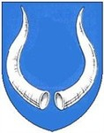

Antavla
Offsen Dyre
Blev ca 60 år.

Far:
Offe Dyre d.ä (1170? - >1208)
Född:
omkring 1200.
Död:
omkring 1260.
Personhistoria
Årtal
Ålder
Händelse
1200?
Födelse omkring 1200
>1208
Fadern
Offe Dyre d.ä
dör efter 1208
1260?
Död omkring 1260